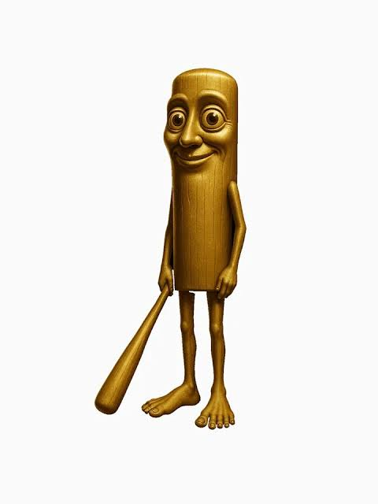

Artiklar
Här hittar du artiklar om Tung Tung Tung Sahur, hans historia, ursprung och hur han blev ett av internets största Brainrot-memes.

Tung Tung Tung Sahurs ursprung
Läs om hur karaktären skapades och varför den blev ett enormt internetfenomen under 2025.
Historien bakom Sahur
Upptäck berättelsen om Tung Tung Tung Sahur och varför han sägs dyka upp när någon inte vaknar till sahur.
Internetfenomenet
Se hur TikTok, YouTube och AI gjorde Tung Tung Tung Sahur till en av världens mest spridda memes.